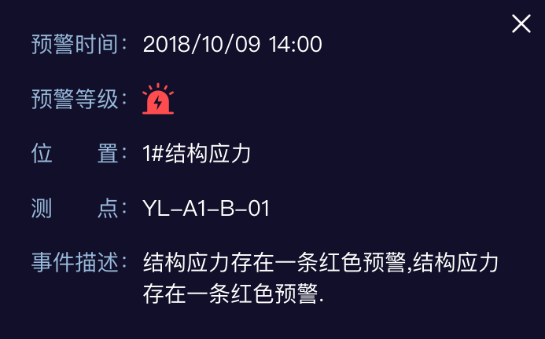

- 桥梁名称： 浦仪公路西段上坝夹江大桥 （切换）
- 桥 型： 双塔双索面钢箱梁斜拉桥
- 跨径组合： 50+180+500+180+50m
- 地区路线： 南京104国道
- 中心桩号： 左幅LK7+919.901;右幅AK7+019.901
- 通车时间： 2020年
- 设计荷载： 公路-I级
浦仪公路西段上坝夹江大桥健康监测系统
2020年05月11日 周一 19 : 46
管理员
- 首页
- 时程数据
- 测点时程
- 交通荷载
- 统计数据
- 测点时程统计
- 交通荷载统计
- 结构
状态分析- 结构动力特性分析
- 应力五度指标
- 结构变形响应分析
- 正交异性板疲劳分析
- 拉索索力时频域分析
- 结构相关性分析
- 阻尼器/梁端纵向累积行程分析
- 行人舒适度评价
- 服役
环境分析- 实际车载效应分析
- 风荷载分析
- 温度场分析
- 预警管理
- 结构状态预警
- 服役环境预警
- 报表管理
- 系统管理
- 角色管理
- 监测设备管理
桥梁基本信息
全选
应力
挠度
空间变位
拉索振动
梁端位移
阻尼器位移
横向支座位移
 温度
温度
温湿度
风速
动力特性
地震、船撞
未处理预警测点
数据异常测点
说明
说明：鼠标左键旋转，右键平移
虚化
环境

-
综合评分
-
设备在线率
-
预警统计
-
气象信息南京 更新于2020-08-10 19:32:4428℃晴26 优
空气质量温度
22~32℃湿度
57%风速
西·3米/秒未来2小时内有台风